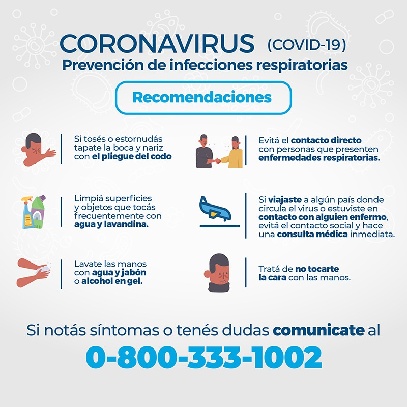

Toma las precauciones adecuadas e infórmate bien para protegerte y cuidar de quienes te rodean. Sigue las recomendaciones de los organismos de salud pública de tu zona.
Para evitar la propagación de la COVID-19: Lávate las manos con frecuencia. Usa agua y jabón o un desinfectante de manos a base de alcohol. Mantén una distancia de seguridad con personas que tosan o estornuden. Utiliza mascarilla cuando no sea posible mantener el distanciamiento físico. No te toques los ojos, la nariz ni la boca. Cuando tosas o estornudes, cúbrete la nariz y la boca con el codo flexionado o con un pañuelo. Si no te encuentras bien, quédate en casa. En caso de que tengas fiebre, tos o dificultad para respirar, busca atención médica. Llama por teléfono antes de acudir a cualquier proveedor de servicios sanitarios para que te dirijan al centro médico adecuado. De esta forma, te protegerás a ti y evitarás la propagación de virus y otras infecciones.
Las mascarillas pueden ayudar a prevenir que las personas que las llevan propaguen el virus y lo contagien a otras personas. Sin embargo, no protegen frente a la COVID-19 por sí solas, sino que deben combinarse con el distanciamiento físico y la higiene de manos. Sigue las recomendaciones de los organismos de salud pública de tu zona.
Organizacion Mundial de la Salud| Mes | Casos | Muertes |
|---|---|---|
| Marzo | 50 | 2 |
| Abril | 300 | 10 |
| Mayo | 700 | 20 |
| Junio | 1000 | 25 |
| Julio | 2000 | 50 |